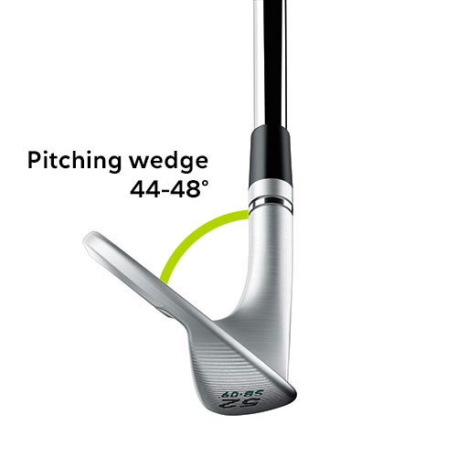
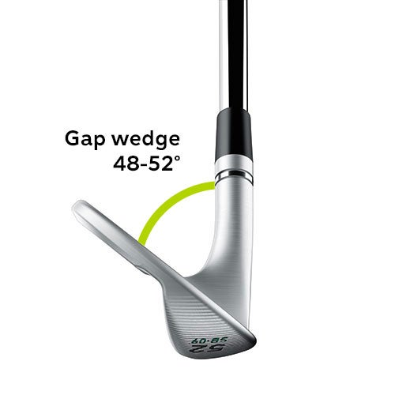
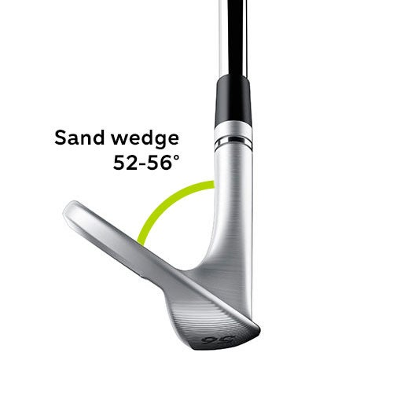
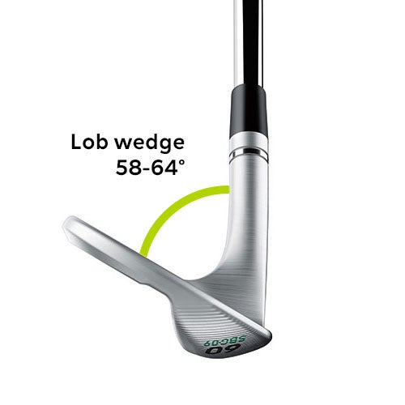

Pitching Wedge (PW)
Usually the lowest-lofted wedge, often around 44–48 degrees. It is often part of the iron set and used for full shots and longer approach shots into the green.
Wedges are high-lofted clubs designed for short-game shots around the green and approach shots from closer distances. They help you control height, spin, and how quickly the ball stops after landing. This page explains the main types of wedges, key terms like loft and bounce, and how to think about building a wedge setup that fits your game.
Wedges are used in many scoring situations:
Because wedges are used so often near the hole, they have a big impact on how many pars and up-and-down saves you can make in a round.
Most golfers carry a mix of wedges, each with a different loft and purpose.

Usually the lowest-lofted wedge, often around 44–48 degrees. It is often part of the iron set and used for full shots and longer approach shots into the green.

Sometimes called an approach wedge (AW). It fills the loft gap between the pitching wedge and sand wedge, often around 50–52 degrees, and is useful for controlled shots into the green.

Typically around 54–56 degrees of loft. Designed for bunker play and short approaches. It often has more bounce to help the club glide through sand or soft turf.

Usually 58–60 degrees (and sometimes higher). It is used for high, soft shots that need to stop quickly, such as over bunkers or from tight lies around the green.
Loft is the angle of the clubface relative to vertical. Higher loft launches the ball higher and usually shorter. Good wedge setups have consistent loft gaps, often 4–6 degrees between wedges.
For example, a common wedge setup might be:
Matching loft gaps to your swing speed and typical distances helps you cover more yardages without needing to swing too hard or too soft.
Two important wedge terms are bounce and grind.
Bounce is the angle between the leading edge of the wedge and the lowest point of the sole. Higher bounce helps the club resist digging into soft turf or sand, while lower bounce can work better on firm ground or tight lies.
Grind refers to how the sole of the wedge is shaped—where material has been removed or kept. Different grinds change how the wedge sits on the ground and how versatile it is for opening or closing the face around the green.
In simple terms, players who take big divots or play in soft conditions might prefer more bounce, while players with shallow swings on firmer turf might choose less bounce.
Wedges are also defined by how they feel and how much spin they can create.
Modern wedge grooves and face textures are designed to increase friction and spin, especially on shorter shots. Fresh grooves generally spin more than very worn faces.
Many wedges are forged for a softer feel, while others are cast with designed sound and feedback. Feel is very personal, and it can influence your confidence on delicate shots.
Wedges can come in chrome, satin, black, raw, or other finishes. While finish is partly cosmetic, some players prefer less glare at address, especially in bright sunlight.
When choosing wedges, it helps to think about:
As an amateur golfer who changes equipment often, experimenting with different wedge lofts, bounce options, and grinds can show you which combinations feel most comfortable and help you control both trajectory and spin.
A good wedge setup fills the yardage gaps between your pitching wedge and your shortest full-swing wedge, while still giving you options for bunker shots, high soft shots, and low running chips.
Over time, you can adjust your wedges by:
Since wedges are scoring clubs, small improvements in how they fit your game can quickly show up on your scorecard.